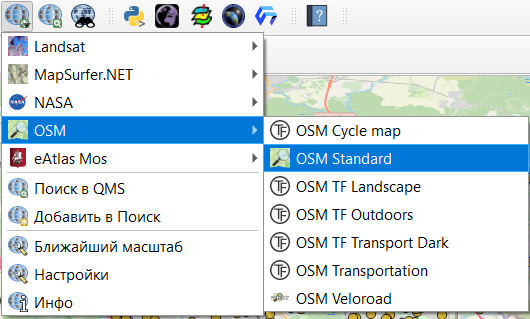

5 Старт работы
5.1 Общие элементы интерфейса
После запуска программы вы увидите окно показанное на рисунке ниже19.

В основное части окна (на месте панели Недавние проекты и Новости) у вас появится карта вашего проекта со всеми слоями, которые будут открыты и видимы в данный момент времени.
В верхней части окна представлена строка меню и панель инструментов.

Возможно панель инструментов и строка меню, показанная на рисунке отличается от вашей, это объясняется тем, что у меня уже установлены некоторые дополнительные модули/плагины20, которые отображаются в окне программы. В ходе работы у вас тоже будут добавляться новые кнопки и элементы панели.
В левой части окна есть две панели: Браузер и Слои.

В панели Браузер отображаются все доступные вам источники данных для их открытия в QGIS, причем эти источники могут быть локальными (жесткий диск вашего компьютера, например), веб-сервисами (например, WMS/WMTS или XYZ Tiles) или базами данных (например, SpatialLite, PostgreSQL).
Любые доступные вам источники данных вы можете открыть из этой панели.
На панели Слои будут показываться все открытые слои данных.
Фактически слои - это наборы географических данных, у которых есть геометрические пространственные характеристики и атрибутивные данные (как правило, но не всегда, например, у слоев из веб-сервисов или растровых атрибутивных данных нет).
В более широком смысле слой - это представление набора данных на цифровой карте или, другими словами, часть географической реальности на определенной территории. Можно рассматривать слои как аналог элемента легенды на бумажной карте.
В нижней части окна тоже есть определенные элементы управления (слева направо):

Панель поиска - позволяет осуществлять поиск с помощью тектовых запросов;
Координаты - показывает координаты положения курсора в системе координат проекта;
Масштабировать - показывает текущий масштаб и позволяет задавать необходимую величину масштаба;
Увеличение - позволяет увеличить изображение на экране без изменения масштаба;
Поворот - задание угла поворота (по часовой стрелке от направления на север);
Отрисовка - когда вы перемещаетесь по карте, увеличиваете, изменяете размеры окна, изменяете стиль объектов на карте, добавляете или удаляете слои, изменяете их видимость происходит перерисовка карты, если убрать галочку в этом параметре, то перерисовка в перечисленных случаях происходить не будет;
Текущая система координат - система координат проекта, изменение которой влечет за собой перепроецирование “на лету” (о нем еще будет сказано позже).
5.2 Добавление подложки
Для начала работы добавим в наш проект подложку.
Подложкой в ГИС называют то, что используется как фоновое изображение, как правило, это может быть карта в виде тайлов (см. 4.3) или какое-либо изображение (спутниковый снимок, растр с геопривязкой).
Подложка необходима для добавления контекста на карту, возможности ориентирования на местности, а также она может выполнять эстетическую функцию при подготовке и оформлении карт.
По умолчанию на панели браузер нам доступны два варианта подложек в формате XYZ Tiles:
OpenStreetMap - подложка на основе данных OpenStreet Map;
Mapzen Global Terrain - подложка на основе сведений о рельефе.
По двойному клику левой кнопкой мыши вы можете добавить любую из них.

При необходимости вы можете увеличить и приблизить нужную вам область.
5.2.1 Добавление подложки с помощью модуля QuickMapServices
Как уже говорилось выше 5.1 модули могут использоваться для расширения основного функционала QGIS, в том числе для взаимодействия с веб-сервисами и загрузки из них информации. С полным перечнем доступных модулей, их функциями и требованиями можно ознакомиться в официальном репозитории QGIS plugins web portal.
Установка модулей осуществляется через строку меню Модули — Управление модулями.

После этого должно появиться окно установки модулей.

Поиск нужного модуля можно осуществлять через строку поиску вверху окна по названию или его части, или по тексту описания.
Установка модулей возможна благодаря подключению к официальному репозиторию, но при необходимости модули можно устанавливать из локальных файлов (Установить из ZIP файла).
Для расширения перечня доступных нам подложек необходимо найти и установить модуль QuickMapServices21.

Более подробно прочитать о модуле и ознакомиться с перечнем доступных сервисов, а также добавить свой можно на его сайте: https://qms.nextgis.com/
После установки модуля у вас на панели инструментов появятся три новых значка  . Для того, чтобы просто добавить новую подложку нужно воспользоваться средним из них.
. Для того, чтобы просто добавить новую подложку нужно воспользоваться средним из них.

Непосредственно после установки модуля у вас не будет доступно столько вариантов сервисов и подложек, для того, чтобы их добавить нужно открыть настройки.

В настройках нужно найти последнюю вкладку Загрузить сервисы, в которой нужно нажать кнопку Получить дополнительные источники данных22. После этого список доступных вам подложек значительно расширится.

!NB обратите внимание, что, если вы будете открывать несколько подложек, то они могут перекрывать друг друга и одна из них будет не видна. Так происходит благодаря послойной организации данных в ГИС, где нижний слой закрывается верхним.
Если вы хотите поменять очередность слоев можно просто перетащить один из них вверх или вниз с помощью зажатой левой кнопки мыши.
Если вы ранее не работали в QGIS, то скорее всего у вас не будет панели Недавние проекты.↩︎
они предзначены для расширения основного инструментария программы и решения специальных задач, про модули и их установку будет неоднократно говориться далее↩︎
так как у меня модуль уже установлен, то есть только кнопки его удаления и переустановки, у вас вместо кнопки Переустановить модуль должна быть активна кнопка Установить модуль, после нажатия на которую эта установка и осуществиться.↩︎
иногда настройки модуля открываются только на английском, тогда вам нужно открыть Settings, в которых выбрать вкладку Load services и нажать кнопку Get contributed pack↩︎